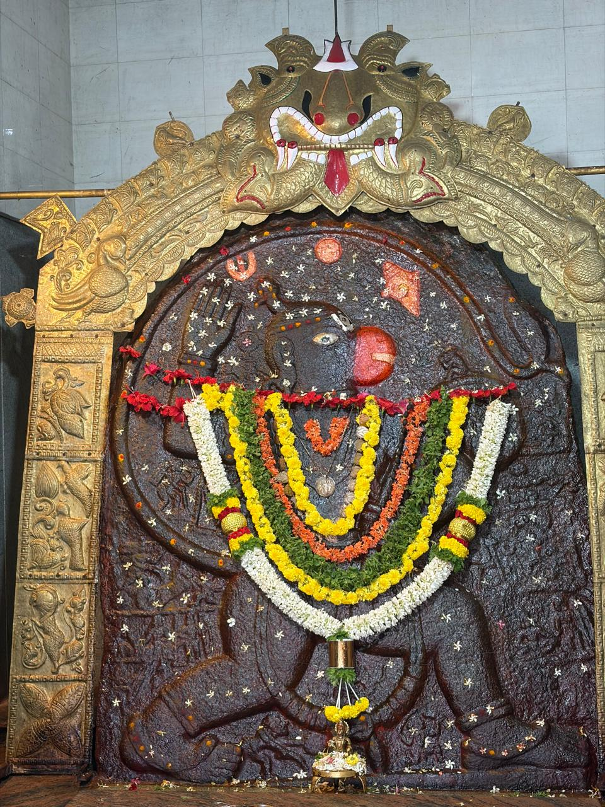
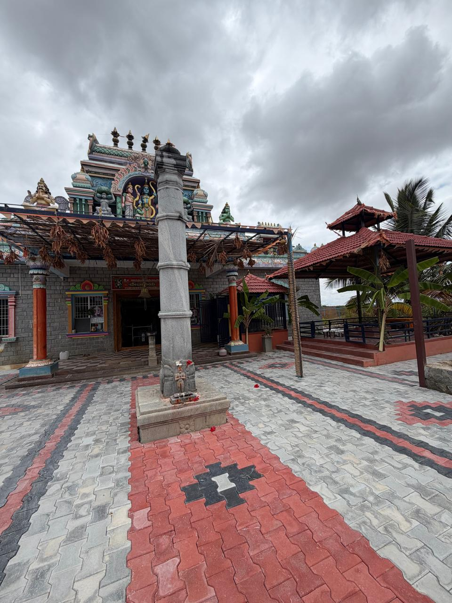

ಚಿತ್ರ ಗ್ಯಾಲರಿ




ಭಕ್ತಿ • ಸೇವೆ • ಧರ್ಮ • ಸಮಾಜ ಕಲ್ಯಾಣ
ದೇಣಿಗೆ ನೀಡಿವಿಶೇಷ ಪೂಜೆ, ಅಭಿಷೇಕ, ಹನುಮಾನ್ ಚಾಲೀಸಾ ಪಾರಾಯಣ, ಪ್ರಸಾದ ವಿತರಣೆ ಮತ್ತು ಅನ್ನದಾನ.
ಶ್ರೀರಾಮ ಪೂಜೆ, ಭಜನೆ, ಪಾರಾಯಣ ಹಾಗೂ ಪ್ರಸಾದ ವಿತರಣೆ.
ವಿಶೇಷ ಅಲಂಕಾರ, ಮೆರವಣಿಗೆ, ಭಕ್ತರ ಸಮಾಗಮ ಮತ್ತು ಅನ್ನದಾನ.
ದೀಪಾಲಂಕಾರ, ವಿಶೇಷ ಆರತಿ ಮತ್ತು ಭಜನಾ ಕಾರ್ಯಕ್ರಮಗಳು.
ಕಿಟ್ಟನಕೆರೆಯ ಶ್ರೀ ಆಂಜನೇಯಸ್ವಾಮಿ ಸೇವಾ ಸಂಸ್ಥೆಯು ದೇವಾಲಯ ಅಭಿವೃದ್ಧಿ, ಅನ್ನದಾನ, ಧಾರ್ಮಿಕ ಹಾಗೂ ಸಾಮಾಜಿಕ ಕಾರ್ಯಗಳನ್ನು ನಡೆಸುತ್ತಿದೆ.


ಶ್ರೀ ಆಂಜನೇಯಸ್ವಾಮಿ ಸೇವಾ ಸಂಸ್ಥೆ
ಕಿಟ್ಟನಕೆರೆ, ಕರ್ನಾಟಕ
ದೂರವಾಣಿ: +91 XXXXX XXXXX